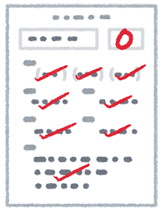

• Help students achieve higher grade in Math.
• Make it easier for students to achieve higher grade in Math
• Make students more engaged in Math class
• Make parents more involved in their student's education
• Make students and teachers more connected
Problems

Low Grades
Students recieve low grades in Math and Science.

Students Fail Class
Students don't recieve enough credits for graduation and can't enter college
Parents get mad
Parents and students become sad and develope mental health issues.